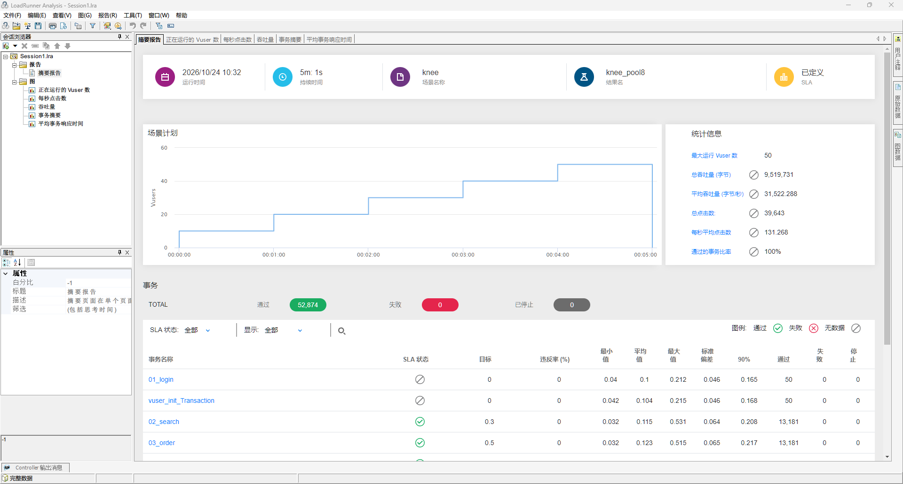
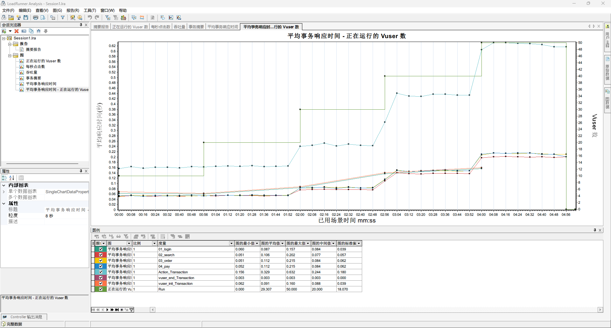
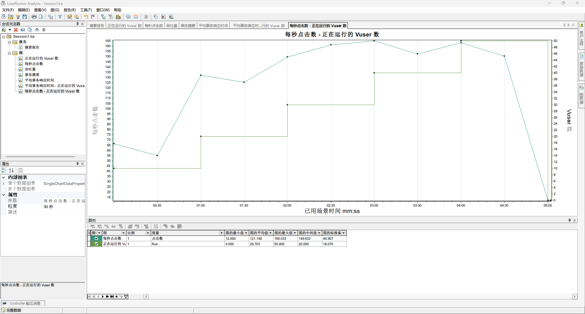
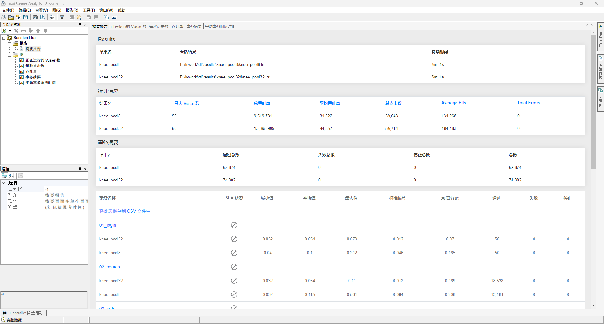
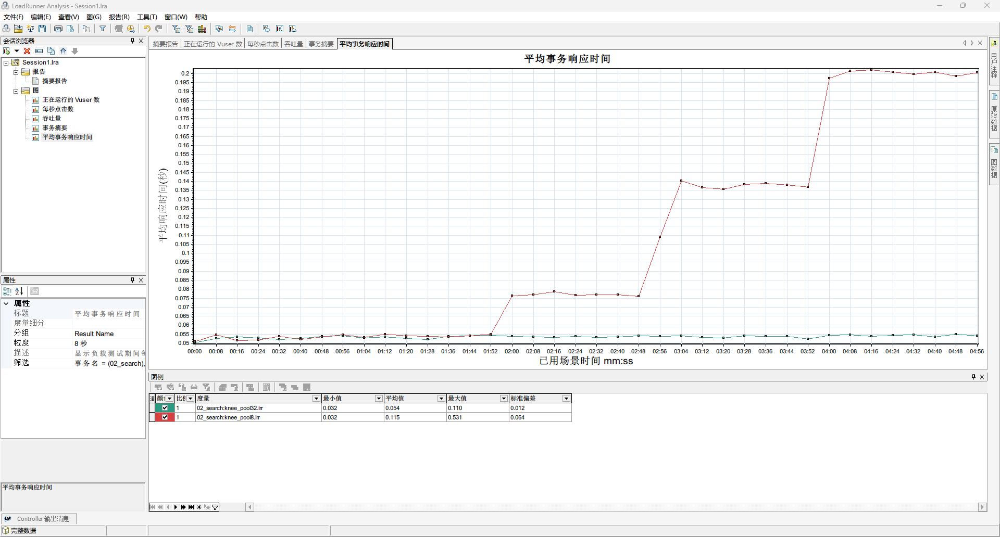
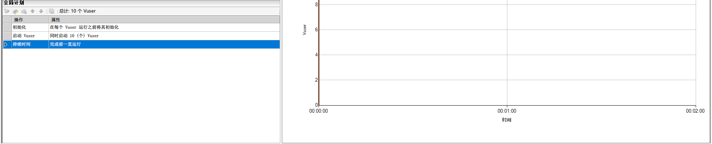
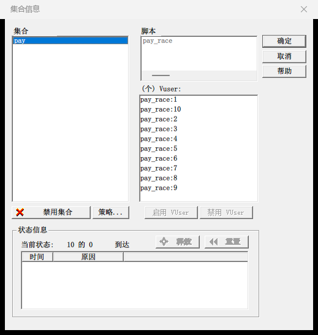
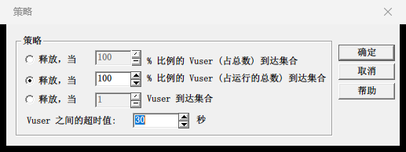
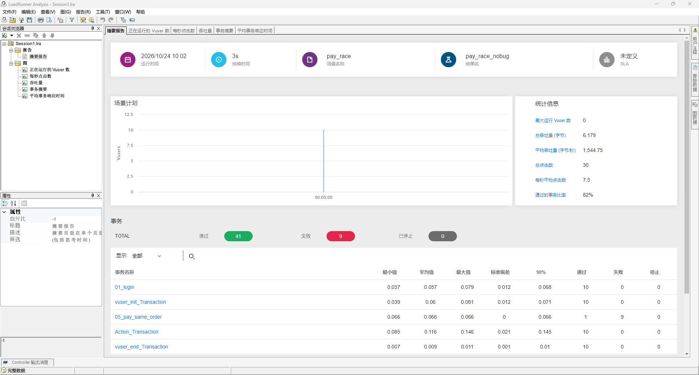
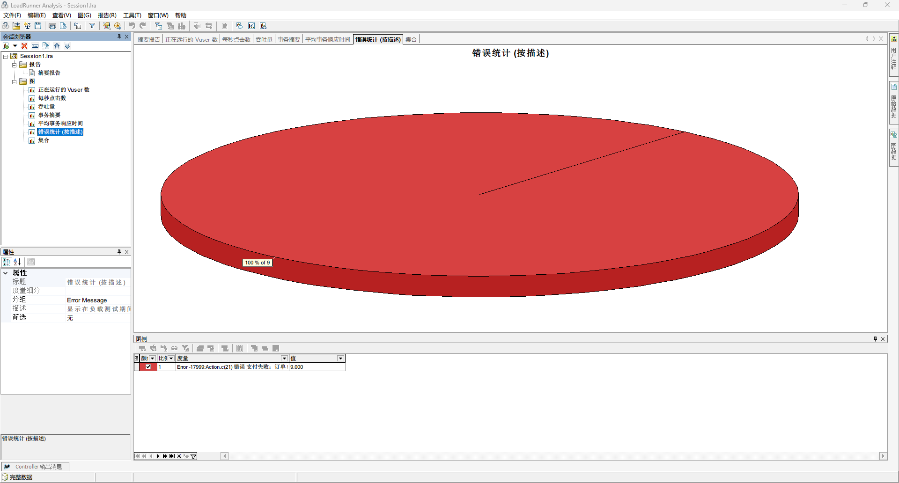

第 18 章 性能实战¶
本章目标
- 会在压测前核算测试数据够不够用，比如账号的余额能撑多久；
- 会用阶梯加压找到系统的拐点，读得懂拐点前后各项指标的变化；
- 会从「吞吐量不涨、响应时间变长、CPU 不高」推断瓶颈的方向，并用只改一个变量的对比实验验证；
- 会用集合点做并发测试，知道并发测试关心的是数据对不对；
- 知道测试账号设计不当会让压测结果失真；
- 会做稳定性测试，分得清内存泄漏和数据量增长；
- 能用实验数据写出一份性能测试报告；
- 知道 LoadRunner 和 JMeter、Locust 的概念怎么对应。
前三章学会了写脚本、配场景、看结果。本章用它们做五个实验：找拐点、调优后对比、并发支付、同一账号多处登录、稳定性测试。每个实验都按社区版的 50 个虚拟用户设计，一台电脑就能做完。
本章的数字和截图都是在作者电脑上实际运行得到的。练习网站和 LoadRunner 在同一台电脑上，电脑上还开着别的程序，CPU 这类数字会有波动；你做出来的数字和这里有出入是正常的，变化的趋势应该一致。
18.1 准备¶
18.1.1 五个实验一览¶
| 实验 | 场景 | 练习网站的开关 | 结果名 |
|---|---|---|---|
| 一：找拐点 | knee：50 个用户，每分钟加 10 个 | SHOP_INIT_BALANCE=1000000 | knee_pool8 |
| 二：调优后对比 | 同上 | 再加 SHOP_DB_POOL=32 | knee_pool32 |
| 三：并发支付 | pay_race：10 个用户同时付同一张订单 | 默认；再试 SHOP_PAY_RACE_BUG=1 | pay_race_nobug、pay_race_bug |
| 四：同一账号多处登录 | single：20 个用户，跑 1 分钟 | SHOP_SINGLE_SESSION=1 | single_seq、single_unique |
| 五：稳定性 | stable：20 个用户，跑 30 分钟 | SHOP_INIT_BALANCE=1000000 | stable_30m |
练习网站的开关是环境变量，在启动练习网站的 PowerShell 窗口里先设好再启动，比如：
> $env:SHOP_INIT_BALANCE = "1000000"
> python -m uvicorn shop.app:app --port 8000 --no-access-log
--no-access-log 让练习网站不打印每个请求的访问日志：每秒几百个请求时，打印日志本身就要占不少 CPU，会影响测出来的数字。
两个约定：
- 每个实验开始前都重启练习网站。 练习网站的数据都在内存里，重启就回到初始状态：余额、订单、库存都是新的；
- 做完一个实验就去掉开关。 用
Remove-Item Env:SHOP_INIT_BALANCE这样的命令，或者关掉窗口重开，否则开关会带到下一个实验里。
18.1.2 数据够不够用¶
压测前先算一算测试数据能撑多久。shop_order 每次迭代买一件商品，第 15 章的五个搜索词搜到的商品，平均每单约 150 元（实验五里 75101 张订单一共 11231956.5 元，平均 149.56 元）。每个账号的初始余额是 10 万元。
拿实验五算：20 个账号、每秒约 41 次迭代，每个账号每秒花 41 ÷ 20 × 150 ≈ 307 元，10 万元只够 100000 ÷ 307 ≈ 326 秒，5 分半钟就扣光了。之后支付全部返回业务码 3002（余额不足），后面 25 分钟测的都是失败的支付，结果就废了。所以实验五把初始余额调到 100 万。
实验一、二只跑 5 分钟，可最早启动的 10 个用户一直在跑。实测实验二里它们每人支付了 614～619 次，按每单 150 元算要花 9 万多，已经很接近 10 万，所以这两个实验也把余额调到 100 万。
账号的个数也要够：shop_order 的账号参数是「唯一」，一个虚拟用户一个账号，account.dat 里有 user001～user100 共 100 个，50 个用户够用。
说明
数据不够时，现象不一定是报错。 余额扣光了是报 3002，可如果是库存卖光、优惠券领完，有的系统返回的是「成功，但什么都没买到」。这也是第 15 章坚持给每个关键步骤加检查点的原因。
18.1.3 只改一个变量¶
实验一和实验二只差一个开关 SHOP_DB_POOL，场景、脚本、数据、思考时间完全一样，两次的差别才能归到连接池上。第 13 章 13.7 节说过：对比测试一次只改一个变量。
18.2 实验一：阶梯加压找拐点¶
18.2.1 场景¶
在第 16 章 demo16 的基础上改：
- 在 Controller 里打开 demo16，文件 → 另存为 knee.lrs；
-
编辑计划（第 16 章 16.4 节）：
操作 设置 启动 Vuser 启动 50 个，10 个 Vuser，每隔 00:01:00 持续时间 运行 00:01:00 停止 Vuser 同时 计划图是五级台阶：每分钟加 10 个用户，第 4 分钟加满 50 个，再跑 1 分钟。每一级台阶就是一档压力；
-
运行时设置 → 思考时间，选「将录制思考时间乘以」，填 0.1；
- 结果设置：结果名称 knee_pool8；
- SLA 和 Windows 资源监控保留 demo16 的设置，保存。
为什么把思考时间缩成十分之一：按利特尔法则（第 13 章 13.2.6 节，第 16 章 16.9.4 节核对过），每次迭代 0.16 秒的请求加 3 秒的思考，50 个用户每秒只能发 50 ÷ 3.16 × 3 ≈ 47 个请求，离练习网站的上限还远，社区版的 50 个用户不够用。思考时间乘以 0.1 后一次迭代只停 0.3 秒，同样 50 个用户每秒最多能发三百多个请求。
这样做的代价是：一个虚拟用户不再代表一个真实的人，「50 个用户」和真实的 50 人在线不是一回事。所以看拐点时以每秒请求数为准，用户数只是加压的手段。真实项目里有足够的许可时，应该按真实的思考时间加更多的用户。
18.2.2 运行¶
用 $env:SHOP_INIT_BALANCE = "1000000" 启动练习网站（连接池用默认的 8），运行 knee，一共跑 5 分钟出头。
用 Analysis 打开结果，摘要里三个业务事务（02_search、03_order、04_pay）各通过 13181 次、0 失败，SLA 全部通过：

全程的数字看不出什么问题：02_search 平均 0.115 秒，P90 0.208 秒，都在 0.3 秒的目标以内。可这是五档压力混在一起的平均数，要按档来看。
18.2.3 按档看数据¶
用第 17 章 17.10 节的 lr_summary.py 按档汇总，每档 60 秒，去掉每档开头 15 秒（用户刚加上来，数据还不稳）：
> python tools/lr_summary.py D:\work\lr-results\knee_pool8 --step 60 --skip 15
输出的最后一张表（响应时间单位是毫秒，CPU 来自 Windows 资源监控）：
| 用户数 | 每秒请求数 | 02_search 平均 / 90% | 03_order 平均 / 90% | 04_pay 平均 / 90% | 失败 | CPU |
|---|---|---|---|---|---|---|
| 10 | 61.9 | 53 / 68 | 54 / 69 | 54 / 69 | 0 | 18% |
| 20 | 123.1 | 54 / 70 | 55 / 71 | 55 / 71 | 0 | 17% |
| 30 | 158.2 | 77 / 99 | 85 / 106 | 84 / 105 | 0 | 16% |
| 40 | 158.7 | 137 / 163 | 148 / 170 | 148 / 171 | 0 | 28% |
| 50 | 157.9 | 201 / 227 | 213 / 236 | 213 / 235 | 0 | 36% |
在 Analysis 里把平均事务响应时间和正在运行的 Vuser 数叠加（第 17 章 17.7 节），台阶和响应时间的关系一目了然：

每秒点击数叠加 Vuser 数，粒度调到 30 秒（第 17 章 17.6 节）：

18.2.4 读懂拐点¶
逐档看：
- 10 到 20 个用户：每秒请求数从 61.9 翻倍到 123.1，响应时间几乎不变。系统还有余力，加多少压力就处理多少。用利特尔法则核对：一次迭代约 0.16 + 0.3 = 0.46 秒，10 个用户每秒 10 ÷ 0.46 × 3 ≈ 65 个请求，和 61.9 差不多（实际每次迭代还有一点 LoadRunner 自己的开销）；
- 20 到 30 个用户：按比例应该到 185 左右，实际只有 158.2，搜索的响应时间从 54 毫秒涨到 77 毫秒。系统开始处理不过来了；
- 30 到 50 个用户：每秒请求数一直停在 158 左右，响应时间却从 77 毫秒涨到 201 毫秒。多加的用户没有带来更多的处理量，只是在排队。
拐点在 20 到 30 个用户之间，系统的最大吞吐量约为每秒 158 个请求。 拐点以后再加压，只会让每个人等得更久。
拐点以后的响应时间也能用利特尔法则算出来。每秒请求数固定在 158，也就是每秒 158 ÷ 3 ≈ 52.7 次迭代；50 个用户，每人一次迭代要 50 ÷ 52.7 ≈ 0.95 秒，去掉 0.3 秒思考时间，三个请求一共 0.65 秒，平均每个约 0.216 秒，和实测的 201～213 毫秒很接近。也就是说，多出来的响应时间全是排队的时间。
对照第 13 章 13.4 节的目标，四个接口合计要每秒 200 次请求，这套系统最多 158 次，达不到目标，要找出瓶颈。
18.2.5 瓶颈在哪¶
把几个现象放在一起：
| 现象 | 说明 |
|---|---|
| 每秒请求数到 158 就不涨了 | 有一个地方限制了处理能力 |
| 响应时间随用户数线性上涨 | 请求在某个地方排队 |
| 整台电脑的 CPU 只有 16%～36% | 不是 CPU 算不过来 |
| 没有任何错误 | 不是报错导致请求变少 |
CPU 不忙、请求却在排队，常见的原因是数量有限的资源：数据库连接池、线程池、锁、调用的外部服务限制了并发数。请求要先拿到这个资源才能往下走，资源用完了，后来的请求只能等。
练习网站的代码能证实这一点。shop_order 用到的登录、搜索、下单、支付几个接口，每次都会调用一次 db_query，它模拟一次数据库查询（下面是 app.py 的节选）：
DB_POOL = int(os.getenv("SHOP_DB_POOL", "8"))
DB_LATENCY_MS = int(os.getenv("SHOP_DB_LATENCY_MS", "50"))
_db_pool = threading.BoundedSemaphore(DB_POOL)
def db_query():
"""模拟一次数据库查询：先拿到连接（连接池用完了就排队等），再花一点时间。"""
with _db_pool:
time.sleep(DB_LATENCY_MS / 1000 * random.uniform(0.6, 1.4))
连接池只有 8 个连接，每次查询平均 50 毫秒。对连接池也用一次利特尔法则：8 个连接一直不停地查，每秒最多 8 ÷ 0.05 = 160 次查询。这几个接口每次查一次，所以每秒最多处理 160 个请求，实测的 158 就是碰到了这个上限。
真实项目里看不到这么直白的代码，要靠证据一步步缩小范围：
- 看应用的连接池监控：活跃连接数一直等于最大值，等待获取连接的线程很多；
- 在压测过程中抓应用的线程快照（Java 用 jstack），大量线程停在获取连接的地方；
- 看数据库这一侧：连接数、慢查询、锁等待。数据库自己很闲，问题就在应用的连接池；数据库也忙，就要先优化查询。
性能测试工程师不一定要自己改代码，但要能拿着这些证据和开发说清楚「慢在哪里、为什么」。
这也解答了第 16 章练习 1 的问题：思考时间改成忽略以后，10 个用户每秒想发的请求超过 160 个，同样碰到了连接池的上限，响应时间随之变长。
18.3 实验二：调大连接池再测一次¶
18.3.1 运行¶
用两个开关重启练习网站：
> $env:SHOP_INIT_BALANCE = "1000000"
> $env:SHOP_DB_POOL = "32"
> python -m uvicorn shop.app:app --port 8000 --no-access-log
knee 场景一点都不改，只把结果名称改成 knee_pool32，再跑一次。
18.3.2 结果¶
| 用户数 | 每秒请求数 | 02_search 平均 / 90% | 03_order 平均 / 90% | 04_pay 平均 / 90% | 失败 | CPU |
|---|---|---|---|---|---|---|
| 10 | 62.3 | 53 / 69 | 53 / 69 | 53 / 69 | 0 | 17% |
| 20 | 124.1 | 53 / 69 | 54 / 70 | 54 / 70 | 0 | 17% |
| 30 | 186.1 | 53 / 69 | 54 / 70 | 54 / 70 | 0 | 17% |
| 40 | 247.6 | 53 / 69 | 55 / 70 | 54 / 70 | 0 | 43% |
| 50 | 308.3 | 54 / 70 | 55 / 71 | 55 / 70 | 0 | 56% |
每秒请求数随用户数一路涨上去，50 个用户时到了 308.3，响应时间始终在 53～55 毫秒。连接池的上限变成了每秒 32 ÷ 0.05 = 640 次，50 个用户还碰不到它：按利特尔法则，50 个用户每秒最多发 50 ÷ 0.46 × 3 ≈ 326 个请求，实测 308.3，这时的瓶颈变成了压力本身，系统还有余力。
用交叉结果（第 17 章 17.8 节）把两次放在一起看：

| 项目 | knee_pool8 | knee_pool32 |
|---|---|---|
| 总点击数 | 39,643 | 55,714 |
| 每秒平均点击数 | 131.268 | 184.483 |
| 通过的事务总数 | 52,874 | 74,302 |
| 02_search 平均 / P90（秒） | 0.115 / 0.208 | 0.054 / 0.069 |
| 02_search 最大值（秒） | 0.531 | 0.110 |
在交叉会话的平均事务响应时间里，用筛选条件只留下 02_search（事务名的下拉列表里勾选）：

红线在第 2、3、4 分钟各上一个台阶，正好是用户加到 30、40、50 的时刻；绿线一直贴在 0.054 秒附近。
18.3.3 结论和代价¶
调大连接池以后，同样 50 个用户，吞吐量从每秒 158 提高到 308，提高了近一倍，响应时间回到了没有压力时的水平。第 13 章的目标每秒 200 次已经可以达到。
两点要注意：
- CPU 跟着涨了。 50 个用户时整机 CPU 从 36% 涨到 56%，处理的请求多了，CPU 用得也多了。再往上加压，下一个瓶颈很可能是 CPU，要用更多的用户验证，社区版的 50 个用户已经不够了；
- 连接池不是越大越好。 真实的数据库，每个连接都要占内存，数据库也有最大连接数的限制；几十台应用服务器各开 32 个连接，数据库可能先承受不住。调多大，要和开发、数据库管理员一起，结合数据库那一侧的监控来定。
18.4 实验三：并发支付¶
18.4.1 要测什么¶
前两个实验关心的是「快不快」。第 13 章 13.3 节说过，并发测试关心的是「对不对」：很多请求同时做同一件事时，结果还对不对。典型的例子是用户手快，在支付按钮上连点了好几下，或者网络不好、客户端自动重试，同一张订单的支付请求几乎同时到了服务器好几次。正确的结果是：只有一次支付成功，钱只扣一次。
18.4.2 脚本 pay_race¶
参考代码的 lr/pay_race/ 是专门为这个实验写的脚本，结构和 shop_order 一样，源文件同样存成 GBK。
vuser_init.c 用 alice 登录，所有虚拟用户都用这个账号，相当于同一个人在连点：
vuser_init()
{
// 被测系统的地址：换环境只改这一行
lr_save_string("http://127.0.0.1:8000", "base");
lr_start_transaction("01_login");
web_reg_find("Text=\"code\":0", LAST);
web_reg_save_param_json("ParamName=token",
"QueryString=$.data.token",
SEARCH_FILTERS,
"Scope=Body",
LAST);
// 所有虚拟用户都用 alice 登录：模拟同一个人在支付按钮上连点
web_custom_request("login",
"URL={base}/api/login",
"Method=POST",
"EncType=application/json",
"Body={\"username\":\"alice\",\"password\":\"alice123\"}",
LAST);
lr_end_transaction("01_login", LR_AUTO);
web_add_auto_header("token", "{token}");
return 0;
}
Action.c 先到集合点等齐，再付同一张订单：
Action()
{
// 集合点：先到的虚拟用户在这里等，到齐了再一起往下走，让支付请求同时到达服务器
lr_rendezvous("pay");
lr_start_transaction("05_pay_same_order");
web_reg_save_param_json("ParamName=payCode",
"QueryString=$.code",
SEARCH_FILTERS,
"Scope=Body",
LAST);
// 订单号来自 order.dat，所有虚拟用户付的是同一张订单
web_custom_request("pay",
"URL={base}/api/orders/{orderNo}/pay",
"Method=POST",
LAST);
if (strcmp(lr_eval_string("{payCode}"), "0") != 0) {
lr_error_message("支付失败：订单 %s，业务码 %s", lr_eval_string("{orderNo}"), lr_eval_string("{payCode}"));
lr_end_transaction("05_pay_same_order", LR_FAIL);
} else {
lr_output_message("支付成功：订单 %s", lr_eval_string("{orderNo}"));
lr_end_transaction("05_pay_same_order", LR_AUTO);
}
return 0;
}
vuser_end.c 退出登录。参数 orderNo 是文件类型，来自 order.dat，「选择下一行」是「顺序」、「更新值的时间」是「一次」：每个虚拟用户都取第一行，付的是同一张订单。运行时设置的迭代数是 1，每个用户只付一次。
订单要在压测前准备好。脚本目录里的 make_order.py 用 alice 下一张订单，把订单号写进 order.dat。在工程根目录执行（练习网站要在运行）：
> python lr\pay_race\make_order.py
已下单：SO20261024000001，金额 129.0 元，订单号已写进 order.dat
alice 当前余额：100000.0 元
搜的是充电宝，129 元。练习网站刚重启时，这是第一张订单，所以订单号是当天的 000001。
18.4.3 场景¶
- 在 VuGen 里打开 pay_race，集成 → 创建 Controller 场景，Vuser 数填 10（第 16 章 16.2.1 节）；
- 编辑启动 Vuser：启动 10 个，选「同时」；
-
编辑持续时间：选「完成前一直运行」，点「确定」时提示「计划程序操作将被移除」，点「是」，停止 Vuser 那一行被删掉。每个用户付完一次就结束，不需要停止操作：

-
点菜单 场景 → 集合，打开「集合信息」：左边是脚本里的集合点 pay，右边列着会到达这个集合点的 10 个虚拟用户：

-
点「策略」看放行的条件：

选项 意思 释放，当 [100]% 比例的 Vuser（占总数）到达集合 按场景里的用户总数算 释放，当 [100]% 比例的 Vuser（占运行的总数）到达集合 默认。按正在运行的用户数算 释放，当 [1] Vuser 到达集合 到了几个人就放行 Vuser 之间的超时值 [30] 秒 两个用户先后到达的间隔超过 30 秒，就不再等，把已经到的放行 保持默认：10 个用户都到齐了才一起放行； 6. 结果 → 结果设置：结果名称 pay_race_nobug，目录
D:\work\lr-results；文件 → 另存为D:\work\autotest-demo\lr\scenarios\pay_race.lrs。
18.4.4 默认模式：只成功了一次¶
练习网站不带开关重启，执行 make_order.py 下单，然后运行场景。场景几秒钟就跑完了。再用 make_order.py check 查订单和余额：
> python lr\pay_race\make_order.py check
订单 SO20261024000001：状态 PAID，金额 129.0 元
alice 当前余额：99871.0 元
订单已支付，余额只少了 129 元。LoadRunner 这边，05_pay_same_order 通过 1 次、失败 9 次：

失败的 9 次是脚本里的 lr_error_message 报的，错误信息是：
Action.c(21): 错误: 支付失败：订单 SO20261024000001，业务码 3003
3003 是「订单已支付，不能支付」：第一个请求付完以后，订单变成了已支付，后面 9 个请求都被拒绝了。在 Analysis 里添加错误类的「错误统计 (按描述)」图，能看到这一种错误一共 9 次，错误号 -17999 是 lr_error_message 报的错：

这 9 次失败恰恰说明系统是对的。 并发测试的预期本来就是「只有一次成功」，所以判断并发测试通没通过，要看业务数据：订单的状态、余额扣了几次，而不是看 LoadRunner 的通过率。
另外，摘要里的「最大运行 Vuser 数」显示 0：场景只跑了 3 秒，这一项没统计上，以事务数为准。
18.4.5 打开缺陷开关：扣了十次钱¶
用 $env:SHOP_PAY_RACE_BUG = "1" 重启练习网站，结果名改成 pay_race_bug，重新执行 make_order.py 下单、运行场景、检查：
> python lr\pay_race\make_order.py
已下单：SO20261024000001，金额 129.0 元，订单号已写进 order.dat
alice 当前余额：100000.0 元
> python lr\pay_race\make_order.py check
订单 SO20261024000001：状态 PAID，金额 129.0 元
alice 当前余额：98710.0 元
一张 129 元的订单，余额少了 1290 元：扣了 10 次钱。
LoadRunner 这边，05_pay_same_order 通过 10 次、失败 0 次。用第 17 章的 lr_summary.py 检查（python tools/lr_summary.py D:\work\lr-results\pay_race_bug --check），结论是「检查通过：没有失败的事务，场景里没有定义 SLA」，退出码 0。工具看来一切正常，钱却多扣了 9 次。只看通过率的话，这个严重的资金缺陷就漏过去了。
18.4.6 原因和修复¶
支付接口的代码（app.py）：
@app.post("/api/orders/{order_no}/pay", tags=["订单"], summary="支付订单（从余额扣款）")
def pay_order(order_no: str, username: str = Depends(login_user)):
# 正常情况下同一用户的支付排队处理；打开缺陷开关后不排队，并发支付会重复扣款
guard = contextlib.nullcontext() if PAY_RACE_BUG else _user_locks[username]
with guard:
o = find_order(order_no, username)
if not o:
return fail(3001, "订单不存在")
if o["status"] != "UNPAID":
return fail(3003, f"订单{STATUS_TEXT[o['status']]}，不能支付")
user = USERS[username]
if user["balance"] < o["amount"]:
return fail(3002, "余额不足")
db_query() # 模拟调用支付通道、写支付流水
user["balance"] -= o["amount"]
o["status"] = "PAID"
o["paidAt"] = now()
return ok({"orderNo": order_no, "status": "PAID", "balance": yuan(user["balance"])})
支付分三步：检查订单是不是待支付，调用支付通道（db_query，约 50 毫秒），扣钱并把订单改成已支付。打开开关后没有锁，10 个请求同时到达，都在第一步看到「待支付」，都通过了检查，然后各自扣了一次钱。这种「先检查、再修改」，中间有空档被别的请求插进来的问题，叫竞态条件。
默认模式下有一把按用户分的锁（_user_locks），同一个用户的支付排队一个一个处理：第一个付完把订单改成已支付，后面的再检查就过不去了。
真实系统里常见的修复办法：
| 办法 | 做法 |
|---|---|
| 加锁 | 同一张订单、同一个用户的支付串行处理。多台服务器时要用分布式锁 |
| 数据库条件更新 | UPDATE 订单 SET 状态='已支付' WHERE 订单号=? AND 状态='待支付'，看更新了几行：1 行才继续扣款，0 行说明别的请求已经付过了 |
| 幂等 | 每次支付带一个唯一的请求号，服务端记录处理过的请求号，同一个号只处理一次 |
| 唯一约束 | 支付流水表上给订单号加唯一索引，第二条流水插不进去 |
18.4.7 用 pytest 做同样的测试¶
同样的测试也能写成一条接口用例。第 4 章 4.14 节说过，接口用例里还差一条并发支付的用例，现在把它加上：在 tests/api 下新建 test_pay_concurrency.py。
"""并发支付：同一张订单被同时支付多次，钱只能扣一次。
练习网站默认没有这个缺陷，这条用例会通过。用 SHOP_PAY_RACE_BUG=1 重启练习网站，
它就会失败，这就是并发测试能发现、单线程测试发现不了的那类资金问题。
"""
import threading
from concurrent.futures import ThreadPoolExecutor
import allure
import pytest
from common.api_client import ShopApi, ok
THREADS = 10
@allure.feature("订单")
@allure.title("同一订单并发支付 10 次，只成功 1 次、只扣 1 次钱")
@pytest.mark.concurrency
def test_concurrent_pay_deducts_once(api, config, unpaid_order):
balance_before = ok(api.me())["balance"]
barrier = threading.Barrier(THREADS) # 10 个线程都准备好了再一起发，尽量撞在同一时刻
def pay_once(_):
client = ShopApi(config["base_url"]) # 每个线程用自己的连接
client.session.headers["token"] = api.token # 同一个登录态，相当于同一个人连点支付
barrier.wait()
return client.pay_order(unpaid_order["orderNo"]).json()["code"]
with ThreadPoolExecutor(max_workers=THREADS) as pool:
codes = list(pool.map(pay_once, range(THREADS)))
balance_after = ok(api.me())["balance"]
assert codes.count(0) == 1, f"应该只有 1 次支付成功，实际返回的业务码：{codes}"
assert balance_after == pytest.approx(balance_before - unpaid_order["amount"]), (
f"余额应该只扣 1 次：支付前 {balance_before}，支付后 {balance_after}，订单金额 {unpaid_order['amount']}"
)
用 10 个线程、同一个登录态一起支付：
- threading.Barrier(10) 是线程版的集合点：每个线程执行到
barrier.wait()就停下来等，10 个都到了再一起往下走； - 每个线程用自己的 ShopApi 对象，各走各的连接，但请求头里带的是同一个 token，相当于同一个人连点；
ThreadPoolExecutor是线程池，pool.map让 10 个线程各执行一次 pay_once，收集 10 个业务码；- 最后断言两件事：业务码 0（成功）只出现一次；余额只少了一张订单的钱。
用例带着 @pytest.mark.concurrency 标记，第 7 章 7.8 节登记过这个标记，可以按标记单独运行。练习网站按默认方式启动，运行：
> pytest -m concurrency
……
tests\api\test_pay_concurrency.py . [100%]
====================== 1 passed, 159 deselected in 0.63s ======================
deselected 的个数取决于你的工程里有多少条用例。用 $env:SHOP_PAY_RACE_BUG = "1" 重启练习网站再运行，它就失败了：
> pytest -m concurrency
……
E AssertionError: 应该只有 1 次支付成功，实际返回的业务码：[0, 0, 0, 0, 0, 0, 0, 0, 0, 0]
E assert 10 == 1
……
FAILED tests/api/test_pay_concurrency.py::test_concurrent_pay_deducts_once - ...
====================== 1 failed, 159 deselected in 0.95s ======================
10 次都返回了业务码 0。第 7 章 7.6 节 skipif 的例子 tests/adv/test_adv_skip_xfail.py 里，有一条专门演示这个缺陷的用例，只在开关打开时才运行。运行 pytest 的窗口也要设上这个环境变量，skipif 才会放行：
> $env:SHOP_PAY_RACE_BUG = "1"
> pytest tests/adv/test_adv_skip_xfail.py
……
tests\adv\test_adv_skip_xfail.py .x [100%]
……
======================== 1 passed, 1 xfailed in 0.59s =========================
演示缺陷的那条通过了（它断言的就是会重复扣款），x 是同一个文件里第 7 章预期失败的例子。做完去掉开关：Remove-Item Env:SHOP_PAY_RACE_BUG，按默认方式重启练习网站。
LoadRunner 和 pytest 都能做并发测试，各有用处：
| LoadRunner 的集合点 | pytest 的多线程用例 | |
|---|---|---|
| 适合 | 并发量大（几十、几百个用户），或者要在持续的背景压力下测并发 | 并发量小、只验证一个点，比如「同时支付 10 次只成功 1 次」 |
| 判断结果 | 要自己去查业务数据 | 断言直接写在用例里，能放进日常的自动化回归 |
| 成本 | 要准备场景、要有许可 | 和普通的接口用例一样 |
资金、库存这类功能，最好两种都有：pytest 的用例放进流水线，每次改代码都跑；上线前再用 LoadRunner 在压力下验证一次。
18.5 实验四：同一账号多处登录¶
18.5.1 场景和开关¶
很多系统不允许同一个账号在多处登录：新的登录会让旧的 token 失效。练习网站用 SHOP_SINGLE_SESSION=1 启动时就是这样（第 2 章 2.5 节）。这个实验看看测试账号设计不当时，压测结果会变成什么样。
场景 single：在第 16 章 demo16 的基础上另存为 single.lrs，启动 Vuser 改成启动 20 个、选「同时」，持续时间运行 00:01:00，停止 Vuser 选「同时」，思考时间保持按录制参数回放（每次迭代停 3 秒）。用 $env:SHOP_SINGLE_SESSION = "1" 重启练习网站。
在 VuGen 里打开 shop_order，设计 → 参数 → 参数列表，把 username 的「选择下一行」从「唯一」改成「顺序」（「更新值的时间」还是「一次」），保存脚本，场景运行时用的就是改过的参数设置。结果名称 single_seq。
18.5.2 结果¶
> python tools/lr_summary.py D:\work\lr-results\single_seq --check
| 事务 | 通过 | 失败 |
|---|---|---|
| 01_login | 20 | 0 |
| 02_search | 1064 | 0 |
| 03_order | 19 | 1045 |
| 04_pay | 19 | 0 |
| vuser_end_Transaction | 1 | 19 |
HTTP 状态码里有 401 共 1064 次。--check 列出了失败的事务，退出码 1；而 Controller 命令行运行的退出码仍然是 0（第 16 章 16.12 节）。
怎么回事：「顺序」加「一次」，每个虚拟用户都从第一行开始取，20 个用户全用 user001 登录。每登录一次，前一个人的 token 就失效了，最后只有最后登录的那个用户的 token 有效。
- 02_search 不需要登录，全部通过。失败的迭代在下单那一步就结束了，一次只要 1 秒多，所以搜索反而跑了 1064 次；
- 03_order 只有最后登录的那个用户能成功，1 分钟跑了 19 次，其余 19 个用户的 1045 次全部 401；
- 04_pay 只有那个用户走到了这一步，所以通过 19 次、没有失败；
- 退出登录也一样，19 个用户的 token 已经失效，失败 19 次。
结果目录的 log 文件夹里，每个出错的用户一个日志文件。按第 16 章的设置只在出错时写日志，所以每次迭代只记了出错前后的几行（日志里的弯引号换成了直引号，行尾的 [MsgId: ……] 省掉了）：
开始自动日志消息堆栈 – 迭代 1。
Action.c(17): 注册的 web_reg_find 对于"Text="code":0"成功(计数=1)
Action.c(17): web_url("search") 已成功，147 个正文字节，126 个标头字节
Action.c(21): 通知: 事务 "02_search" 以 "Pass" 状态结束 (持续时间: 0.1109 浪费时间: 0.0002)。
Action.c(23): lr_think_time: 1.00 秒。
Action.c(25): 通知: 事务 "03_order" 已启动。
……
Action.c(34): web_custom_request("order") 已启动
Action.c(34): 错误 -26546: 需要进行身份验证，请使用"web_set_user"，例如 web_set_user("domain\\user", "password", "host:port")；
Action.c(34): 错误 -26629: 对于"http://127.0.0.1:8000/api/orders"，HTTP 状态代码=401 (Unauthorized)
Action.c(34): 错误 -35060: 找不到所指定查询的匹配项:"$.data.orderNo"
Action.c(34): 错误 -26366: 找不到 web_reg_find 的"Text="code":0"
结束自动日志消息堆栈。
-26546 的提示让你用 web_set_user，那是另一种身份验证方式，和本例无关（第 14 章 14.7.3 节也遇到过它）。真正的原因看 -26629：HTTP 401。
18.5.3 改回「唯一」¶
把 username 改回「唯一」，结果名 single_unique，再跑一次：0 个失败，三个业务事务各通过 380 次。
这个实验说明：
- 账号设计会直接影响压测结果。 账号不够、取值方式选错，测出来的数字毫无意义，可场景照样能「跑完」；
- 要了解被测系统的登录规则。 只允许一处登录、登录次数有限制、密码输错几次就锁定，这些规则都要在准备数据时考虑进去；
- 第 15 章 15.5.3 节说过，「顺序」和「唯一」在 VuGen 里回放看不出区别，到 Controller 里多个用户一起跑才显现出来。
18.6 实验五：稳定性测试¶
18.6.1 场景¶
稳定性测试用正常的高负载长时间运行，看系统会不会越跑越慢、内存会不会一直涨。压力定多大：实验一的最大吞吐量约每秒 158 个请求，取它的八成左右。knee 场景的思考时间（乘以 0.1）下，20 个用户约每秒 123 个请求，是最大吞吐量的 78%。
场景 stable：在 knee 的基础上另存，启动 Vuser 改成启动 20 个、5 个 Vuser 每隔 00:00:15；持续时间运行 00:30:00；结果名称 stable_30m。练习网站用 $env:SHOP_INIT_BALANCE = "1000000" 重启（18.1.2 节算过，默认余额只够 5 分半钟）。
真实项目的稳定性测试一般跑 8 小时、24 小时甚至更久，本章为了演示只跑 30 分钟。
18.6.2 记录练习网站的内存¶
第 16 章配的 Windows 资源监控只看整台电脑的 CPU。要看练习网站这一个进程的内存，用参考代码里的 tools/mem_watch.py（本章的内存数据是用同样做法的脚本记录的）。先找到练习网站的进程号：
> netstat -ano | findstr :8000
TCP 127.0.0.1:8000 0.0.0.0:0 LISTENING 27032
最后一列 27032 就是（你的进程号不一样）。在虚拟环境里用 python -m uvicorn 启动时，会有两个 python 进程，一定要用 netstat 查出来的那个监听端口的进程。
另开一个 PowerShell 窗口，进入工程目录、激活虚拟环境，开始记录，每 30 秒记一次，一共记 2000 秒（比场景长一点，能看到停压以后的样子）：
> python tools/mem_watch.py 27032 2000 30 D:\work\lr-results\stable_mem.csv
然后在 Controller 里运行 stable 场景。
18.6.3 结果¶
30 分 46 秒，三个业务事务各通过 75101 次，0 失败，SLA 全部达标。每 5 分钟汇总一次：
> python tools/lr_summary.py D:\work\lr-results\stable_30m --step 300 --skip 0
| 用户数 | 每秒请求数 | 02_search 平均 / 90% | 03_order 平均 / 90% | 04_pay 平均 / 90% | 失败 | CPU |
|---|---|---|---|---|---|---|
| 20 | 114.0 | 53 / 69 | 55 / 71 | 55 / 71 | 0 | 28% |
| 20 | 123.6 | 53 / 69 | 55 / 71 | 54 / 71 | 0 | 30% |
| 20 | 123.5 | 53 / 69 | 55 / 71 | 55 / 71 | 0 | 27% |
| 20 | 123.7 | 53 / 69 | 55 / 71 | 55 / 71 | 0 | 27% |
| 20 | 123.7 | 53 / 69 | 55 / 71 | 55 / 71 | 0 | 21% |
| 20 | 123.6 | 53 / 69 | 55 / 70 | 55 / 70 | 0 | 29% |
命令实际输出 7 行，最后一行是场景最后 46 秒减压的数据，按 300 秒平均只有每秒 19 个请求，上面没有列出来。第一段包含了开头 45 秒的加压，所以每秒请求数低一些。后面 25 分钟，每秒请求数、响应时间几乎一个数字都没变：系统没有越跑越慢。
用第 6 章 6.3 节的开放接口 /api/stats/orders 查练习网站的订单统计，订单总数 75101，和 LoadRunner 的 03_order 通过次数一致，也都已支付。
18.6.4 内存一直在涨，是泄漏吗¶
stable_mem.csv 里练习网站的内存（单位 MB）。工作集是进程现在占着的物理内存；专用字节是进程自己申请、别的进程不能共用的内存，判断内存泄漏主要看它：
| 开始后 | 0 秒 | 5 分 | 10 分 | 15 分 | 20 分 | 25 分 | 30 分 | 停压后 |
|---|---|---|---|---|---|---|---|---|
| 工作集 | 51.9 | 63.2 | 73.5 | 82.8 | 92.7 | 102.0 | 111.4 | 113.2 |
| 专用字节 | 40.3 | 51.1 | 62.0 | 70.9 | 80.5 | 90.5 | 99.7 | 101.8 |
内存每分钟涨 2 MB 左右，30 分钟涨了 60 多 MB，压力停下以后不涨了，但也没有降回去。
内存一直涨，先别急着下结论说是泄漏，要先找原因。练习网站把所有订单都放在内存里（app.py 开头的说明：数据都放在内存里），订单越多，占的内存就越多。算一下：专用字节涨了 101.8 − 40.3 = 61.5 MB，30 分钟下了 75101 张订单，平均每张订单约 0.84 KB，对一个带十来个字段的 Python 字典来说是合理的大小。所以这里的内存增长是数据量增长带来的，不是泄漏。
区分两者的思路：
| 看什么 | 数据量增长 | 内存泄漏 |
|---|---|---|
| 增长和业务量的关系 | 和存下来的数据成正比，能算出每条数据占多少 | 和请求次数有关，哪怕请求什么都没存下来，内存也在涨 |
| 停压以后 | 不再涨，数据还在所以不降 | 也不再涨，泄漏掉的内存一般也降不回来，这一项区分不了两者，要结合前两项看 |
| 是否合理 | 看设计：数据本来就该放在内存里吗 | 不合理 |
真实系统里，订单存在数据库里，应用服务器的内存在压力稳定后应该是平的（有垃圾回收的语言会呈锯齿状，但每次回收后的低点不会一直抬高）。如果像这里一样一路上涨，就要查是哪些对象在增多：Java 用内存快照（堆转储）对比开始和结束时的对象数量，Python 可以用 tracemalloc，然后找开发确认这些对象该不该一直留着。常见的原因是缓存没有设上限、会话或监听器没有释放。
18.6.5 数据里的一个异常值¶
lr_summary.py 算出的全程最小响应时间是 0.000 秒。查原始数据，第 1412 秒有 21 条业务事务的响应时间不到 20 毫秒，其中 17 条的开始时间和结束时间完全相同，而正常的请求至少要 30 毫秒；那一秒记下的事务有 146 条，前后几秒都是 123 条左右。这 21 条的时间没有记对，可事务总数和练习网站的订单数对得上，说明它们是真实发生的事务，不是多出来的记录。
21 条只占三个业务事务共 22.5 万条的万分之一，对平均值、百分位数没有影响。看数据时，最小值、最大值这类极端的数字要多留个心眼，弄清楚它是怎么来的，再决定要不要写进报告。
18.7 写测试报告¶
按第 17 章 17.11 节的结构，用本章实验的数据写一份报告。下面是一份精简的样例，真实的报告还要附上场景配置、完整的图表。
迷你商城下单链路性能测试报告
一、结论
- 默认配置（数据库连接池 8）下，系统最大吞吐量约为每秒 158 个请求，低于目标每秒 200 个请求，不达标；
- 瓶颈是数据库连接池：吞吐量达到上限后整机 CPU 只有 16%～36%，响应时间随压力线性上涨；
- 连接池调到 32 后，50 个虚拟用户下吞吐量达到每秒 308 个请求，搜索、下单、支付的 P95 都在 73 毫秒以内，达标；
- 30 分钟稳定性测试（每秒约 123 个请求）期间，吞吐量和响应时间没有变化，没有失败；
- 并发支付存在重复扣款的风险：去掉同一用户的支付锁后，同一张订单被扣款 10 次。现有版本有锁，测试通过，建议保留针对它的自动化用例。
二、测试目标
合计每秒 200 个请求时，搜索的 P95 不超过 0.3 秒，下单、支付的 P95 不超过 0.5 秒，错误率搜索低于 1%、下单和支付低于 0.1%（第 13 章 13.4 节；本次脚本没有商品详情，按合计的每秒请求数评估）。
三、测试环境
练习网站和 LoadRunner 2023 社区版在同一台电脑上；数据库为模拟的连接池，每次查询约 50 毫秒。与生产环境的差别：没有真实的数据库和网络延迟，数据在内存里，结论只能用来说明方法。
四、测试场景
脚本 shop_order（登录、搜索、下单、支付），思考时间为录制值的 0.1 倍；阶梯加压，每分钟加 10 个虚拟用户，最多 50 个；每个虚拟用户使用独立账号。
五、测试结果
（此处放 18.2.3 节、18.3.2 节的两张分档表格，以及叠加图、交叉结果图）
六、问题与分析
- 问题：用户数超过 20 后吞吐量停在每秒 158，搜索的响应时间从 54 毫秒上升到 201 毫秒；
- 证据：分档数据显示吞吐量不再增长、CPU 不高、没有错误；按利特尔法则，拐点后增加的响应时间全部是排队时间；
- 原因：数据库连接池只有 8 个连接，每次查询约 50 毫秒，每秒最多处理 160 次查询；
- 验证：连接池调到 32 后，吞吐量随压力线性增长，响应时间不变。
七、风险与建议
- 调大连接池要评估数据库侧的连接数上限和资源占用；
- 连接池调大后 CPU 随压力上升，50 个虚拟用户时整机 CPU 达到 56%，更高的压力需要更多的虚拟用户许可继续验证；
- 稳定性测试只做了 30 分钟，上线前应按生产的业务高峰做 8 小时以上的测试。
18.8 LoadRunner、JMeter、Locust 概念对照¶
第 13 章说过，学会一个压测工具，换另一个主要是在学界面和写法。下面这张表把本教程用到的 LoadRunner 概念和 JMeter、Locust 里对应的东西放在一起：
| 概念 | LoadRunner | JMeter | Locust |
|---|---|---|---|
| 脚本 | VuGen 脚本（C 语言） | 测试计划（.jmx 文件，图形界面编辑） | locustfile.py（Python 代码） |
| 虚拟用户 | Vuser | 线程组里的线程 | User 类的实例 |
| 一次请求 | web_url、web_custom_request | HTTP 请求取样器 | self.client.get、post |
| 事务 | lr_start_transaction、lr_end_transaction | 事务控制器 | 请求的 name 参数，或者自己记时间上报 |
| 检查点 | web_reg_find | 响应断言、JSON 断言 | catch_response=True 后自己判断，失败时调 failure |
| 关联 | web_reg_save_param_json 等 | JSON 提取器、正则表达式提取器 | 直接在代码里解析响应 |
| 参数化 | 参数列表、.dat 文件 | CSV 数据文件设置 | 在代码里读文件、用队列分配 |
| 思考时间 | lr_think_time | 定时器（固定、随机） | wait_time（between、constant） |
| 集合点 | lr_rendezvous | 同步定时器 | 没有现成的，要自己用 gevent 的事件实现 |
| 场景、加压方式 | Controller 场景的计划 | 线程组的线程数、启动时间、持续时间 | 命令行的 -u、-r、-t，或者自定义的 LoadTestShape |
| 多台机器发压 | Load Generator | 远程服务器（分布式） | master 和 worker |
| 结果分析 | Analysis | 聚合报告等监听器，命令行生成 HTML 报告 | 网页界面、CSV、HTML 报告 |
| 达标判断 | SLA | 断言加上自己检查结果 | 在代码里检查统计数据，设置退出码 |
参考代码的 perf/ 目录里有用 Locust 写的压测脚本，第 19 章的流水线用其中的 locustfile.py 做每天一次的冒烟压测，想对照着看 Locust 写法的可以读一读。
18.9 常见的坑¶
| 现象 | 原因与解决 |
|---|---|
| 压到一半，支付开始大量失败，业务码 3002 | 余额扣光了。压测前先算数据能撑多久，按需调大 SHOP_INIT_BALANCE（18.1.2 节） |
| 50 个用户也压不出拐点 | 思考时间太长，每个用户发的请求太少。社区版用户有限时，把思考时间按比例缩小，并以每秒请求数为准分析（18.2.1 节） |
| 每档开头的数字忽高忽低 | 用户刚加上来，还没进入稳定状态。按档统计时去掉每档开头一段时间（--skip） |
| 只看全程的平均数，觉得一切正常 | 几档压力混在一起被平均了。阶梯加压要按档看（18.2.3 节） |
| 两次测试的结果对比不出原因 | 两次之间改了不止一个地方。一次只改一个变量（18.1.3 节） |
| 拐点以后继续加用户，以为能压出更高的吞吐量 | 拐点以后只是排队变长。吞吐量的上限要靠消除瓶颈来提高 |
| CPU 不高，就认为服务器还有很大余量 | 瓶颈也可能是连接池、线程池、锁这类数量有限的资源，要看吞吐量和响应时间的变化（18.2.5 节） |
| 并发支付全部通过，就以为没问题 | 并发测试要看业务数据：订单状态、扣了几次钱（18.4.5 节） |
| 并发测试成功一次、失败九次，就当成缺陷 | 这正是正确的结果。先想清楚预期再看结果 |
| 大量 401，可脚本在 VuGen 里回放正常 | 多个用户用了同一个账号，系统只允许一处登录。账号参数选「唯一」（18.5 节） |
| 稳定性测试内存一直涨，就报了内存泄漏 | 先看是不是数据量增长：算一算每条数据占多少内存，看停压后是什么样（18.6.4 节） |
| 稳定性测试跑了几分钟就开始报错 | 先查数据：余额、库存、账号这些测试数据是不是用完了 |
18.10 练习¶
- 用
$env:SHOP_DB_LATENCY_MS = "100"把每次查询的耗时调成 100 毫秒，连接池保持 8。先用利特尔法则算出新的最大吞吐量，再跑一次 knee 场景，用 lr_summary.py 按档汇总，看拐点出现在多少个用户、吞吐量停在多少，和你算的对不对得上。 - 把连接池设成 16，先估算最大吞吐量，再跑 knee 场景，用交叉结果和 knee_pool8、knee_pool32 放在一起对比。
- 实验三的集合策略改成「释放，当 [5] Vuser 到达集合」，在缺陷开关打开时跑一次，看 alice 的余额被扣了几次，想一想为什么。
- 不调余额（默认 10 万），把 stable 场景的持续时间改成 10 分钟跑一次。按 18.1.2 节估算支付从什么时候开始失败，再用 Analysis 的筛选或者 lr_summary.py 的 --from、--to 找到失败开始的时间，和你的估算比较。
- 用练习 1 或练习 2 的数据，照 18.7 节的样子写一份完整的测试报告，包括图表。
18.11 自检清单¶
- 能在压测前算出测试数据（余额、账号）能撑多久；
- 会用一个启动 Vuser 操作配出阶梯加压，知道为什么要缩短思考时间、为什么以每秒请求数为准；
- 能从分档数据里找出拐点，说清楚拐点前后吞吐量和响应时间的变化；
- 能用利特尔法则解释拐点以后增加的响应时间；
- 知道「吞吐量不涨、响应时间变长、CPU 不高」通常意味着什么，知道连接池的上限怎么算；
- 会用交叉结果对比调优前后，知道调大连接池的代价；
- 会用集合点、同时启动、完成前一直运行配出并发测试，知道要用业务数据判断结果；
- 能说出竞态条件的成因和几种修复办法；
- 知道账号的取值方式选错会让压测结果失真；
- 会做稳定性测试并记录进程内存，分得清数据量增长和内存泄漏；
- 能用实验数据写出一份结论先行、有证据的测试报告；
- 能说出 LoadRunner 的主要概念在 JMeter、Locust 里叫什么。
下一章：第 19 章 工程化与持续集成